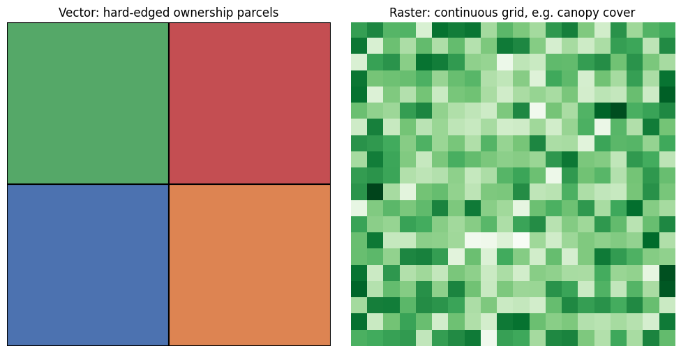

2. Week 2 Lecture Notes#
2.1. GISS/GEOG 361/363: Introduction to Geographic Information Science - Week 2 Lecture Notes#
Unit 2: Types of Spatial Data — Vector vs. raster · Data sources · Introduction to symbology · Cloud-native formats
Read this before you open Lab 1. It gives you the ideas behind the map you’re about to build.
2.2. Welcome Back#
Last week you got oriented: GISystems vs. GIScience, the Geo-Inquiry Process, the five tiers of modern GIS, and a first look at GeoLibre. This week we open up the thing every one of those tools actually moves around: spatial data itself.
We’ll stay grounded in the same practice place — Silver City, Grant County, and the Gila National Forest — but this week the landscape gets more interesting. Lab 1 has you map the land ownership mosaic around Silver City: U.S. Forest Service (Gila National Forest), Bureau of Land Management (BLM), New Mexico State Trust Land, and private and mining-company land, all checkerboarded together across the same few square miles. It’s one of the most visually striking datasets in the region, and it’s not an accident that it looks that way — the pattern itself has a history, which we’ll get into below.
By the end of this lecture, you’ll understand the two basic “shapes” spatial data comes in, where data like this actually comes from, how to make it readable with symbology, and why some of it now streams instead of downloads.
2.3. Learning Goals#
By the end of this lecture, you will be able to:
Explain the difference between vector and raster data, and identify which one better represents a given real-world phenomenon
Describe where GIS data actually comes from, and ask basic critical questions about a dataset before trusting it (who made it, when, at what scale, for what purpose)
Explain the three basic symbology strategies — single symbol, categorized, and graduated — and choose the right one for a given map
Describe what makes a format “cloud-native,” and why that matters for large datasets like national land-cover rasters
Explain why the Silver City-area land ownership mosaic looks the way it does, and connect that pattern to this course’s GeoEthics strand
This lecture does not require any software. Lab 1, right after this, is where you’ll symbolize real data and build your first layered map.
2.4. Lecture Slides and Recording#
If you’d rather click through slides or watch/listen instead of reading straight through, use either of these — they cover the same material as the sections below. Everything required for Lab 1 is also here in text, so both are optional.
Slides: (link/embed goes here once posted — see the instructor note in the code cell below for how to get a working embed URL)
Recording: (link/embed goes here once posted — same note applies)
A captioned or transcript version of the recording will also be posted for anyone who needs or prefers it — reach out if it isn’t up yet and you need it before it is.
# OPTIONAL -- embed a Google Slides deck directly in this notebook.
#
# Instructor note: the normal "Share" link will NOT embed correctly. Instead:
# File -> Share -> Publish to web -> Embed -> copy the <iframe src="..."> URL.
# It will look like: https://docs.google.com/presentation/d/e/2PACX-.../embed?start=false&loop=false
#
# Paste that URL below in place of the placeholder.
from IPython.display import IFrame
slides_url = "PASTE_YOUR_PUBLISH_TO_WEB_EMBED_URL_HERE"
IFrame(src=slides_url, width="100%", height=480)
# OPTIONAL -- embed the lecture recording.
#
# Instructor note: the embed URL format depends on where the recording is hosted.
# - YouTube (unlisted is fine): https://www.youtube.com/embed/VIDEO_ID
# - Panopto: use the "Embed" option in the share menu -- it gives an <iframe> URL directly
# - Kaltura: use the "Publish" / "Embed" option in the share menu
# - Zoom cloud recording: Zoom's share links do not embed reliably -- link out instead
# of embedding (see the markdown cell above), or re-host on YouTube/Panopto first.
#
# Paste the correct embed URL below in place of the placeholder.
from IPython.display import IFrame
recording_url = "PASTE_YOUR_RECORDING_EMBED_URL_HERE"
IFrame(src=recording_url, width="100%", height=400)
If either embed above doesn’t load, that’s expected until a real URL replaces the placeholder — and even with a real URL, some notebook environments (Colab, some JupyterHubs) block embedded pages. In that case, use the direct links above the code cells instead.
2.5. 1. Vector vs. Raster: The Two Shapes of Spatial Data#
Every spatial dataset you will ever open is built from one of two basic shapes. Learning to tell them apart on sight is one of the most useful habits you’ll build this semester.
2.5.1. Vector data: things with edges#
Vector data represents the world as discrete shapes with exact boundaries, built from points, lines, and polygons:
Points — a single location: a mine entrance, a trailhead, a water-quality sampling site
Lines — a path: a road, a stream, a trail
Polygons — an enclosed area: a national forest boundary, a state trust parcel, a mining claim
Each shape carries an attribute table alongside it — a spreadsheet-like list of facts about each feature (owner, name, acreage, date established). Vector data is the right choice whenever a real boundary actually exists: a property line, a county line, a road centerline.
2.5.2. Raster data: things without edges#
Raster data represents the world as a grid of equal-sized cells (pixels), where each cell holds one value: elevation, temperature, percent tree cover, land-cover type. There’s no attribute table attached to a shape — the “shape” is the grid, and each cell’s number is its own tiny data point.
Raster is the right choice whenever a phenomenon doesn’t actually have a hard edge — elevation doesn’t stop at a line, and neither does tree cover, temperature, or wildfire risk. A raster lets that continuity show up in the data instead of forcing a boundary onto something that doesn’t really have one.
A quick test: ask yourself, does this thing have a real edge, or am I imposing one? A property boundary has a real, legally surveyed edge — vector. Canopy cover fades out gradually at a forest’s margin — raster.
2.5.3. Why this distinction matters this week#
Lab 1’s land ownership mosaic is a vector dataset — every Forest Service, BLM, State Trust, and private parcel is a polygon with a hard, surveyed edge and an owner attached in its attribute table. The optional national comparison layers work differently:
PAD-US (Protected Areas Database) is also vector — polygon boundaries of protected and managed lands nationwide, similar in kind to the local ownership layer, just zoomed out.
NLCD (National Land Cover Database) is raster — a nationwide grid classifying land cover (forest, shrubland, developed, agriculture) with no regard for who owns any given cell.
Put them side by side and you can see the same landscape through two different lenses: one built from legal, human-drawn boundaries (who owns this), and one built from a continuous grid of physical conditions (what’s actually growing or built here). Neither lens is more “correct” — they answer different questions. Part of thinking about a place as a system (from Week 1) is noticing when the boundaries we draw — ownership, jurisdiction — do or don’t line up with the boundaries nature actually has, like a watershed or a fire’s path.
2.6. 2. Where Data Actually Comes From#
Every dataset was made by someone, for some purpose, at some point in time — and none of that disappears just because the data now sits quietly in a folder. Before you trust a layer, it’s worth asking a few questions:
Who collected this, and why? A dataset built to manage timber sales and a dataset built to track wildlife habitat may describe the same forest very differently.
When was it collected, and does it still reflect reality? Ownership boundaries shift; land cover changes after a fire. A ten-year-old layer may quietly be wrong.
At what scale or resolution was it built? A national dataset generalizes in ways a county-level dataset doesn’t have to. Zooming into a small parcel using a coarse national layer can produce boundaries that look plausible but aren’t accurate at that scale.
What’s missing? A dataset can only describe what its maker thought to measure. A land ownership layer, for instance, describes legal title — it says nothing about whose land this was before that title existed, or who still uses the land informally today.
This is the practical, hands-on version of the GeoEthics strand: not a separate philosophical add-on, but a habit you apply to every dataset you open, starting with Lab 1.
Where Lab 1’s data comes from:
Layer |
Source |
What it shows |
|---|---|---|
Land ownership mosaic |
NM RGIS Clearinghouse |
Parcel-level ownership around Silver City: USFS, BLM, State Trust, private/mining |
PAD-US |
USGS (national) |
Nationwide protected and managed lands, for scale comparison |
NLCD |
USGS/MRLC (national) |
Nationwide land cover, raster grid |
Two of these three come from the same federal agency (USGS) but describe completely different things — a reminder that “who published it” and “what it measures” are two separate questions, both worth asking.
2.7. 3. Cloud-Native Formats: Data You Stream Instead of Download#
In Week 1 we introduced the Cloud tier of modern GIS — the idea that huge datasets can now be processed without ever fully downloading them. This week you’ll actually feel that in practice.
Datasets like NLCD (a raster covering the entire United States) and PAD-US (a vector layer covering every protected area in the country) are enormous. Not long ago, using either one meant downloading a multi-gigabyte file before you could look at a single county. Two cloud-native formats changed that:
COG (Cloud Optimized GeoTIFF) — a raster format organized so a program can request just the pixels it needs (say, the few square miles around Silver City) without pulling the whole national file first.
GeoParquet — a vector format built the same way for points, lines, and polygons — you can query just the parcels you want from a national or global dataset.
This is the same idea you already used in Lab 0, when GeoLibre streamed a world-countries layer straight from a .parquet file with no download step. NLCD and PAD-US are increasingly available in these cloud-native forms too, which is part of why a national comparison layer is realistic to bring into a single lab session instead of an overnight download.
2.8. 4. Introduction to Symbology: Making Data Readable#
Loading a layer is only half the job — the other half is choosing how it’s drawn, which is what symbology means. Get this wrong and an accurate dataset can still produce a confusing, or even misleading, map. There are three basic strategies, and Lab 1 will ask you to use at least one of them:
2.8.1. Single symbol#
Every feature is drawn the same way — one color, one line weight. Use this when the presence of something matters more than any difference between individual features (for example, a single trail layer where every trail is just “a trail”).
2.8.2. Categorized (unique values)#
Each feature is colored according to a category in its attribute table — a different color per owner, per land-cover type, per land-use zone. This is exactly what Lab 1’s land ownership mosaic calls for: USFS, BLM, State Trust, and private land are categories, not a spectrum, so each gets its own distinct color.
2.8.3. Graduated (classified)#
Features are colored along a scale, from low to high, based on a numeric attribute — elevation, population density, distance to the nearest road. This only makes sense for genuinely continuous, ordered data; using it on categories (like ownership type) would falsely imply that one category is “more” or “less” than another.
A quick test: if you could reasonably put your data’s categories in a specific order from least to most, graduated symbology can work. If the categories are just different from each other with no natural order — like who owns a parcel — categorized is the honest choice.
A note on color: roughly 1 in 12 men and 1 in 200 women have some form of color vision deficiency. When you choose colors for Lab 1’s ownership categories, pick a palette that stays distinguishable in grayscale, not just in full color — ColorBrewer has ready-made, colorblind-safe palettes built specifically for maps like this one. A map that only works for people with typical color vision isn’t fully finished.
2.9. 5. This Week’s Place-Based Focus: Reading the Checkerboard#
The land ownership mosaic around Silver City isn’t randomly scattered — the checkerboard pattern you’ll see in Lab 1 has real history behind it.
New Mexico’s State Trust Land exists because of how New Mexico became a state: as part of statehood, the federal government set aside specific sections of land in every surveyed township to generate income for public schools and other institutions. That’s part of why State Trust parcels show up scattered in a regular pattern rather than as one solid block. Layered in around and between those sections are U.S. Forest Service land (the Gila National Forest), BLM land, and private and mining-company holdings — each added through its own separate legal and historical process, at different times, for different reasons.
The result is a landscape where ownership changes every mile or two, sometimes every few hundred feet — and where the legal boundary you’re mapping often has nothing to do with the natural boundaries underneath it (a ridge, a drainage, a fire’s path). That mismatch is not just a cartography curiosity. It shapes real decisions: who needs whose permission to manage a wildfire that crosses a property line, who can legally access a piece of land that’s surrounded by a different owner’s parcel, whose land this was before any of these categories existed at all.
You don’t need to resolve any of that this week — Lab 1 just asks you to map it accurately and symbolize it clearly. But as you draw parcel boundaries in four different colors, it’s worth noticing that every one of those boundaries was drawn by someone, at some point, for a reason — the same critical habit from Section 2, applied to the map you’re about to build yourself.
2.10. 6. Getting Ready for Lab 1#
A few things to know before you open the lab notebook:
This is your first graded lab. It builds directly on Practice Lab 0 — same region, same tools, same track (Q or A) you chose last week.
You’ll symbolize the land ownership mosaic using categorized symbology — one distinct, colorblind-safe color per owner (USFS, BLM, State Trust, private/mining).
You’ll add a national comparison layer — PAD-US or NLCD — to see the local mosaic in a bigger context.
You’ll build your first real layered map, with attention to symbology choices, not just “does the data show up.”
Keep last week’s habit going: before you trust a layer, ask who made it, when, and at what scale.
When you’re ready, open Lab 1 and start with its Ask step.
2.11. Before You Move On: Quick Reflection#
Take two minutes with these — you’ll expand on them in Lab 1, so a rough first pass is all you need here.
Pick one dataset from this lecture (land ownership, PAD-US, or NLCD) and say whether it’s vector or raster, and why that’s the right shape for what it represents.
If you were symbolizing the land ownership mosaic, would you use single symbol, categorized, or graduated symbology? Why?
Before you’d trust a dataset for Lab 1, what’s one question you’d want answered about where it came from?
Your answers (double-click this cell to edit):
2.11.1. 📎 Resources#
NM RGIS Clearinghouse (this week’s local ownership data) — https://rgis.unm.edu/
USGS PAD-US (Protected Areas Database) — https://www.usgs.gov/programs/gap-analysis-project/science/pad-us-data-overview
NLCD (National Land Cover Database) — https://www.mrlc.gov/
ColorBrewer — colorblind-safe, print-safe map color palettes — https://colorbrewer2.org/
Cloud Optimized GeoTIFF (COG) — https://www.cogeo.org/
GeoParquet specification — https://geoparquet.org/
2.12. Summary#
Spatial data comes in two basic shapes: vector, for things with real edges (parcels, roads, boundaries), and raster, for things that vary continuously across space (land cover, elevation, temperature). Every dataset, whichever shape it takes, was built by someone for a purpose — a fact worth checking before you trust it. Symbology is how you turn loaded data into a readable map: single symbol for simple presence, categorized for distinct groups like land ownership, graduated for genuine numeric scales. And increasingly, large datasets like NLCD and PAD-US don’t need to be downloaded whole — cloud-native formats let you stream just the part you need.
This week’s mosaic of Forest Service, BLM, State Trust, and private land around Silver City is a real, checkerboarded product of history, not a random pattern — and mapping it well means carrying that history with you, not just the polygons.
You’re ready for Lab 1.
2.13. Appendix: Two Optional Interactive Demos#
Everything above this line is all you need for this week. The two cells below are optional extras — small, self-contained demos of ideas from this lecture, built in Python. Skip them, come back later, or run them now if you’re curious. Nothing here is graded.
# OPTIONAL -- a simple side-by-side illustration of vector vs. raster (Section 1).
# No real data or extra installs needed -- matplotlib and numpy are enough.
import matplotlib.pyplot as plt
import numpy as np
from matplotlib.patches import Polygon
fig, axes = plt.subplots(1, 2, figsize=(10, 5))
# Vector: a few hand-drawn "ownership parcels" as polygons with hard edges
ax = axes[0]
parcels = [
([(0, 0), (2, 0), (2, 2), (0, 2)], "#4C72B0"), # USFS
([(2, 0), (4, 0), (4, 2), (2, 2)], "#DD8452"), # BLM
([(0, 2), (2, 2), (2, 4), (0, 4)], "#55A868"), # State Trust
([(2, 2), (4, 2), (4, 4), (2, 4)], "#C44E52"), # Private
]
for coords, color in parcels:
ax.add_patch(Polygon(coords, closed=True, facecolor=color, edgecolor="black", linewidth=1.5))
ax.set_xlim(0, 4)
ax.set_ylim(0, 4)
ax.set_aspect("equal")
ax.set_title("Vector: hard-edged ownership parcels")
ax.axis("off")
# Raster: a smoothly varying grid, e.g. a stand-in for tree canopy cover
ax = axes[1]
rng = np.random.default_rng(42)
grid = rng.random((20, 20))
grid = (grid + np.flip(grid, axis=0) + np.flip(grid, axis=1)) / 3 # smooth it a little
ax.imshow(grid, cmap="Greens")
ax.set_title("Raster: continuous grid, e.g. canopy cover")
ax.axis("off")
plt.tight_layout()
plt.show()

Notice the vector panel has crisp, deliberate lines — every edge was drawn by a surveyor or a legal description. The raster panel has no lines at all, just a gradient — nothing in the real phenomenon it represents (tree cover) actually stops on a dime the way a property line does.
# OPTIONAL -- a tiny interactive symbology explorer for Section 4.
# Uses ipywidgets, which ships with most Jupyter/Colab environments already.
# If it's missing, uncomment the line below:
# !pip install ipywidgets -q
import ipywidgets as widgets
from IPython.display import display
strategies = {
"Single symbol": "Every feature drawn the same way. Good for: presence/absence, e.g. a single trails layer.",
"Categorized": "One color per category, no implied order. Good for: land ownership (USFS, BLM, State Trust, private).",
"Graduated": "Colors along a scale, low to high. Good for: elevation, population density, distance to road.",
}
dropdown = widgets.Dropdown(options=list(strategies.keys()), description="Strategy:")
output = widgets.Output()
def on_change(change):
with output:
output.clear_output()
print(strategies[change["new"]])
dropdown.observe(on_change, names="value")
display(dropdown, output)
with output:
print(strategies[dropdown.value])
That’s it for Week 2 lecture notes. When you’re ready, head to Lab 1 and start with its Ask step.